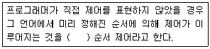
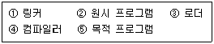

사무자동화산업기사 (2010-03-07 기출문제)
1과목: 사무자동화 시스템
1. PDF에 대한 설명으로 옳지 않은 것은?
- 대부분의 문서가 표현 가능하다.
- 인쇄 상태 그대로를 컴퓨터에서 보여주므로 디지털 출판에 적합하지 않다.
- 장치의 독립성 및 해상도 독립성을 가진다.
- 이동 가능한 문서 형식이다.
(정답률: 91%)

2. 정보처리시스템의 발전과정을 순서대로 나열한 것은?
- 비집중처리시스템→분산처리시스템→집중처리시스템
- 분산처리시스템→비집중처리시스템→집중처리시스템
- 집중처리시스템→단일(개별)처리시스템→분산처리시스템
- 단일(개별)처리시스템→집중처리시스템→분산처리시스템
(정답률: 77%)
3. 사무자동화 추진에 있어서 요구 분석 방법으로 적합하지 않은 것은?
- 인적 요소
- 관리 요소
- 통신 요소
- 처리 요소
(정답률: 38%)
4. 프로세서의 처리 속도 단위가 느린 것부터 빠른 순으로 올바르게 나열된 것은?
- ps-㎲-ms-ns
- ms-ns- ㎲-ps
- ms-㎲- ns-ps
- ns-ps-㎲-ms
(정답률: 82%)
5. 컴퓨터의 출력 정보를 마이크로 이미지 촬영기를 이용하여 온-라인 및 마이크로필름으로부터 오프-라닝으로 촬영현상을 처리하는 시스템은?
- COM
- CAR
- MICR
- CAM
(정답률: 70%)
6. 어떤 소프트웨어에 대해 사용자가 그 소프트웨어를 사용하는데 있어서 지켜야할 조건을 정리해 놓은 계약서를 의미하는 것은?
- SLA(Service Layer Agreement)
- EULA(Emd User License Agreement)
- Open Source
- freeware
(정답률: 81%)
7. 사무자동화 시스템의 목적에 가장 거리가 먼 것은?
- 욕구의 다양화에 대처
- 처리의 신속화와 정확화
- 처리의 투명화
- 비정형적 업무의 자동화
(정답률: 77%)
8. 1Gbyte의 USB 메모리에 저장할 수 있는 최대 한글 글자 수는? (단, 한글 1자를 저장하기 위해서는 2byte가 필요하다.)
- 2의 15승
- 2의 20승
- 2의 29승
- 2의 30승
(정답률: 52%)
9. 분산시스템의 장점으로 적합하지 않은 것은?
- 자원과 데이터 공유
- 작업부하 조절 가능
- 처리능력 향상
- 보안 강화
(정답률: 89%)
10. 트위터(Twitter)에 대한 설명으로 옳지 않은 것은?
- 언제 어디서나 정보를 실시간으로 교류할 수 있다.
- 웹에 직접 접속하지 않고도 글을 올릴 수 있다.
- 한 번에 글자 수 제한 없이 글을 쓸 수 있다.
- 관심 있는 상대방을 뒤따르는 "폴로(Follow)"라는 독특한 기능을 중심으로 소통한다.
(정답률: 78%)
11. 대형 컴퓨터의 CPU에 사용되는 고장 진단 방식은?
- 기능 진단 방식
- 마이크로 진단 방식
- FLT 진단 방식
- 원격 모니터링 진단 방식
(정답률: 55%)
12. USB에 대한 설명으로 틀린 것은?
- 컴퓨터와 주변기기를 연결하는데 쓰이는 입출력 표준이다.
- 주로 캠코더에 탑재되어 DV 규격으로 사용되고 있다.
- 기존의 다양한 방식의 연결을 대처하기 위해 만들었다.
- 충전용으로도 많이 사용되고 있다.
(정답률: 87%)
13. 공동 작업이나 공동 목표에 참여하는 다양한 작업 그룹을 지원하는 응용시스템은?
- 데이터베이스 관리시스템
- 운영체제
- 그룹웨어 시스템
- 입출력 시스템
(정답률: 91%)
14. 데이터베이스 관리시스템의 기능으로 옳지 않은 것은?
- 데이터베이스 내의 자료관계를 설정한다.
- 자료의 보안을 담당하지 않아도 된다.
- 자료의 회복(Recovery) 능력을 갖추고 있다.
- 질의어(Query Language) 능력을 갖추고 있다.
(정답률: 89%)
15. 사무자동화시 성공하기 위해서 기본적으로 갖추어야 할 요소로 옳지 않은 것은?
- 사무자동화에 대한 개념과 계획 및 실천에 대한 의지가 확고해야 한다.
- 사무시스템을 합리적이고 간편하게 개선한다.
- 고성능의 사무기기 도입만으로도 가능하다.
- 사무를 접하는 사람의 사무 형태나 인식의 변화가 선행되어야 한다.
(정답률: 72%)
16. 통신판매중개자가 자신의 정보처리시스템을 통하여 처리한 기록 중 대금 결제에 관한 기록의 보존 기준은?
- 6월
- 1년
- 3년
- 5년
(정답률: 66%)
17. 전자상거래를 구분하기 위한 설명으로 옳지 않은 것은?
- 통신 관점 : 정보전달, 제품/서비스, 전화선, 컴퓨터 네트워크 등 매체를 이용한 결제 분야
- 비즈니스 프로세스 : 상거래와 업무흐름 자동화를 위한 기술의 적용 분야
- 서비스 관점 : 상품의 품질과 서비스 배달 속도를 향상시키며 서비스 비용 절감 관리를 통해 기업, 소비자의 욕망을 충족시키는 분야
- 검색 관점 : 도서 검색이 용이하고, 서비스 전달 시간을 절약시키는 분야
(정답률: 70%)
18. 컴퓨터시스템 설치를 위한 건물 설계 시 고려할 사항으로 거리가 먼 것은?
- 컴퓨터시스템 설치를 위한 입지 선정 시 지반이 약한 지역을 피한다.
- 컴퓨터센터의 주요 건물 구조는 내화구조로 하여야 한다.
- 컴퓨터장비의 원활한 이동을 위해 컴퓨터실의 출입구는 많아야 한다.
- 비상구는 건물 내에서 열쇠를 사용하지 않고 열 수 있는 구조로 한다.
(정답률: 85%)
19. 네트워크내의 주소에 해당하는 IP 어드레스 중 네트워크를 식별하기 위해 몇 비트는 네트워크 어드레스에 사용할지 정의하는 것은?
- DNS 서버
- 디폴트게이트웨이
- NIC카드
- 서브넷 마스크
(정답률: 68%)
20. 사무자동화의 궁극적인 목적으로 가장 적절한 것은?
- 정보처리의 신속
- 대량의 정보 처리
- 지적 생산성 향상
- 관리 기능의 향상
(정답률: 64%)
2과목: 사무경영관리 개론
21. 산업보건기준에 관한 규칙에 의거 "적정한 공기" 기준에 해당하는 것은?
- 황화수소의 농도가 3피피엠 미만인 수준의 공기
- 황화수소의 농도가 5피피엠 미만인 수준의 공기
- 황화수소의 농도가 10피피엠 미만인 수준의 공기
- 황화수소의 농도가 15피피엠 미만인 수준의 공기
(정답률: 44%)
22. 사무작업의 측정법과 관계없는 것은?
- 경험적 측정법
- 워크 샘플링법
- 실적 통계법
- 추상적 측정법
(정답률: 78%)
23. 한국저작권위원회의 업무 내용이 아닌 것은?
- 저작권 정책의 수립 지원
- 저작권의 적용 범위 결정
- 저작권 보호를 위한 국제협력
- 저작권의 침해 등에 관한 감정
(정답률: 38%)
24. 사무작업의 효율화를 위한 사무원칙이 아닌 것은?
- 목적성의 원칙
- 분권화의 원칙
- 평균화의 원칙
- 전체성의 원칙
(정답률: 45%)
25. 의사결정지원시스템(DSS)의 특징이 아닌 것은?
- 초기 시스템은 주고 반구조적, 비구조적 문제를 해결하기 위해 사용
- 초기 시스템은 의사결정자가 데이터와 모델을 활용할 수 있게 해 주는 일시적 컴퓨터시스템으로 정의
- 전통적인 데이터 처리와 경영과학의 계량적 분석기법을 통합하여 사용
- 의사결정자가 신속하고 다양하게 문제를 해결할 수 있는 정보시스템 환경 제공
(정답률: 36%)
26. 하나의 시간 계획을 작성할 때 사용하는 것으로 관리자에게 완성될 프로젝트에 관하여 정확히 요구된 시간의 추정치를 창출할 수 있는 사무계획 수립기법은?
- PERT
- 간트 도표
- 선형계획기법
- 회귀기법
(정답률: 63%)
27. 사무의 처리 순서대로 사무원을 배치하여 1인의 사무원 처리가 끝나면 다음 사무 공정으로 진행하는 사무처리 방식은?
- 유동처리방식
- 개별처리방식
- 로트처리방식
- 순차처리방식
(정답률: 33%)
28. 전산시스템을 보호하기 위한 허용 온도 범위로 적합한 것은?
- -10~0°C
- 0~10°C
- 16~28°C
- 25~42°C
(정답률: 79%)
29. 전자문서의 내용에 대하여 당사자 또는 이해관계자 사이에 다툼이 있을 경우 전자문서의 내용 추정으로 옳은 것은?
- 수신자의 컴퓨터 파일에 기록된 전자문서의 내용대로 작성된 것으로 추정
- 송신자의 컴퓨터 파일에 기록된 전자문서의 내용대로 작성된 것으로 추정
- 전자문서중계자의 컴퓨터 파일에 기록된 전자문서의 내용대로 작성된 것으로 추정
- 결재자의 컴퓨터 파일에 기록된 전자문서의 내용대로 작성된 것으로 추정
(정답률: 45%)
30. 효과적이고 효율적인 사무계획의 요건으로 볼 수 없는 것은?
- 타당성과 합리성
- 탄력성과 신축성
- 용이성과 실현가능성
- 주관성과 정확성
(정답률: 77%)
31. 사무 관리의 전문화에 속하지 않는 것은?
- 집단적 전문화
- 기계적 전문화
- 개인적 전문화
- 과학적 전문화
(정답률: 58%)
32. 사무를 위한 통상적인 작업과 관련이 없는 것은?
- 기록
- 계산
- 면담
- 관리
(정답률: 56%)
33. 저작자가 저작물의 원본이나 그 복제물에 또는 저작물의 공표 매체인 그의 실명 또는 이명을 표시할 권리를 가지는데 이것을 무엇이라고 하는가?
- 공표권
- 개작 배포권
- 동일성 유지권
- 성명표시권
(정답률: 59%)
34. 사무관리규정상 문서의 왼쪽 여백 기준으로 옳은 것은?
- 용지의 왼쪽부터 10밀리미터
- 용지의 왼쪽부터 20밀리미터
- 용지의 왼쪽부터 30밀리미터
- 용지의 왼쪽부터 40밀리미터
(정답률: 59%)
35. 사무관리규정상 정보통신망을 이용하여 문서를 작성, 처리하고자 하는 자가 등록하여 사용하여야 할 사항이 아닌 것은?
- 개인별 사용자 계정
- 비밀번호
- 전자이미지서명
- 공인인증서
(정답률: 77%)
36. 사무환경의 배치에 관한 것으로 가장 적합한 것은?
- 광선은 우측 어깨로부터 받을 수 있도록 배치한다.
- 관리자, 감독자는 가능한 부하직원의 전면에 위치시키도록 한다.
- 방문객의 접촉 기회가 많은 부서는 입구와 거리가 먼 자리에 배치한다.
- 작업자가 빈번히 사용하는 사용용구나 비품은 가능한 집무자 곁에 배치한다.
(정답률: 82%)
37. 영구보존으로 분류된 기록물 중 중요한 기록물에 대하여 보존하는 방법에 포함되지 않는 것은?
- 복제본을 제작하여 보존
- 보존매체에 수록하여 보존
- 이중으로 보존
- 여러 곳에 보존
(정답률: 69%)
38. 사무의 시스템적 관점에 대하여 가장 올바르게 설명한 것은?
- 시스템은 독립적이므로 각 부서별 사무 처리는 서로 연관성이 없다.
- 사무 시스템은 경영 각 부분의 전체가 상호 관련되어 시너지 효과를 가진다.
- 사무 관리의 용이성만을 강조하여 사무 관리의 생산성을 증대한다.
- 사무 관리의 목표를 더욱 효과적으로 달성하기 위해 특정 부분을 강조한다.
(정답률: 64%)
39. 집무환경의 요소가 아닌 것은?
- 실내조명
- 색채조절
- 시간조절
- 방음시설
(정답률: 64%)
40. 사무작업은 계산, 기록, 서신, 전화, 보고, 회의, 명령, 기록의 파일화 및 폐기를 포함한 기록 보존 등의 의사소통 등으로 구분한다고 주장한 학자는?
- 힉스(Hicks)
- 리틀필드(Littlefield)
- 테리(Terry)
- 포레스터(Forrester)
(정답률: 54%)
3과목: 프로그래밍 일반
41. 로더(Loader)의 기능이 아닌 것은?
- 번역(Compiling)
- 링킹(Linking)
- 할당(Allocation)
- 재배치(Relocation)
(정답률: 67%)
42. BNF 표기법에서 기호 "::="의 의미는?
- 선택
- 정의
- 다시 정의될 대상
- 반복
(정답률: 88%)
43. 현 시점에서 가장 오랫동안 사용되지 않은 페이지를 교체하는 페이지 교체 알고리즘은?
- LRU
- LFU
- OPT
- FIFO
(정답률: 57%)
44. 프로세스의 정의로 옳지 않은 것은?
- PCB를 가진 프로그램
- 프로세서가 할당되는 실체
- 프로시저가 활동 중인 것
- 동기적 행위를 일으키는 주체
(정답률: 62%)
45. 교착상태의 해결 방안 중 은행원 알고리즘과 관계되는 것은?
- 예방
- 발견
- 회피
- 회복
(정답률: 63%)
46. C언어의 특징으로 옳지 않은 것은?
- 기호 코드(Mnemonic Code)라고도 한다.
- 이식성이 뛰어나 컴퓨터 기종에 관계없이 프로그램을 작성할 수 있다.
- UNIX 운영체제를 구성하는 시스템 프로그램이다.
- 포인터에 의한 번지 연산 등 다양한 연산 기능을 가진다.
(정답률: 49%)
47. 객체지향 기법에서 객체가 메시지를 받아 실행해야 할 구체적인 연산을 정의하는 것은?
- 메소드
- 클래스
- 속성
- 인스턴스
(정답률: 72%)
48. 파스(Parse) 트리에 대한 설명으로 옳지 않은 것은?
- 작성된 표현식이 BNF의 정의에 의해 바르게 작성되었는지를 확인하기 위해 만드는 트리이다.
- 주어진 표현식에 대한 파스트리가 존재한다면, 그 표현식은 BNF에 의해 작성될 수 없음을 의미한다.
- 문법의 시작 기호로부터 적합한 생성 규칙을 적용할 때마다 가지치기가 이루어진다.
- 파스트리의 터미널 노드는 단말 기호들이 된다.
(정답률: 66%)
49. 다음 문장의 괄호 안 내용으로 가장 적합한 것은?

- 명시적
- 묵시적
- 구조적
- 수학적
(정답률: 83%)
50. 다음 프로그램 언어의 문장구조 중 성격이 다른 하나는?
- while(expression) statement;
- for(expression-1;expression-2;expression-3) statement;
- if(expression) ststement-1; else statement-2;
- do {statement;} while(expression);
(정답률: 57%)
51. 운영체제의 역할로써 적합하지 않은 것은?
- 사용자와 컴퓨터 시스템 간의 인터페이스를 제공한다.
- 입·출력 역할을 제공한다.
- 컴퓨터 시스템의 오류 처리를 담당한다.
- 고급 언어를 기계어로 바꾸는 역할을 한다.
(정답률: 66%)
52. 기계어로 번역된 목적 프로그램을 실행하기 위해 주기억장치로 적재하는 것은?
- 어셈블러
- 매크로 프로세서
- 컴파일러
- 로더
(정답률: 54%)
53. 수식 표기법 중 연산 기호는 두 피연산자 사이에 표현되고 산술연산, 논리연산, 비교연산 들에 주로 사용되며, 이항 연산자에 적합한 표기법은?
- 최후(Last-fix) 표기법
- 전위(Prefix) 표기법
- 중위(Infix) 표기법
- 후위(Postfix) 표기법
(정답률: 85%)
54. 단항(Unary) 연산에 해당하는 것은?
- OR
- AND
- XOR
- NOT
(정답률: 87%)
55. C 언어에서 사용되는 이스케이프시퀸스(Escape-Sequence)와 그 의미의 연결이 옳지 않은 것은?
- ￦n : new line
- ￦b : null character
- ￦t : tab
- ￦r : carriage return
(정답률: 68%)
56. 언어의 구문 요소 중 주석(Comment)에 대한 설명으로 옳지 않은 것은?
- 프로그램의 판독성을 향상시킨다.
- 대부분의 프로그래밍 언어는 형식은 달라도 주석을 허용한다.
- 프로그램이 동작하는 동안 값이 절대로 바뀌지 않는 공간을 의미한다.
- 프로그램 문서화의 중요한 부분이다.
(정답률: 80%)
57. 서브루틴 호출(Subroutione Call) 처리 작업 시 복귀주소를 저장하고 조회하는 용도에 적합한 자료 구조는?
- 데크
- 큐
- 스택
- 연결리스트
(정답률: 61%)
58. C 언어에서 사용하는 데이터 유형이 아닌 것은?
- long
- integer
- float
- double
(정답률: 84%)
59. 프로그램 수행 순서가 옳은 것은?

- ②→④→⑤→①→③
- ⑤→④→②→①→③
- ②→③→④→①→⑤
- ④→①→③→②→⑤
(정답률: 86%)
60. 기계어에 대한 설명으로 옳지 않은 것은?
- 컴퓨터가 직접 이해할 수 있는 언어이다.
- 기종마다 기계어가 다르므로 언어의 호환성은 없다.
- 0과 1의 2진수 형태로 표현되며 수행 시간이 빠르다.
- 프로그램 작성이 용이하다.
(정답률: 73%)
4과목: 정보통신 개론
61. IP 주소의 수는 한정되어 있으므로 어떤 기관에서 배정받은 하나의 네트워크 주소를 다시 여러 개의 작은 네트워크로 나누어 사용하는 것은?
- subnetting
- IP address
- SLIP
- MAC
(정답률: 59%)
62. 통화 중에 이동전화가 한 셀에서 다른 셀로 이동할 때, 자동으로 다른 셀의 통화 채널로 전환해 줌으로써 통화가 지속되게 하는 기능은?
- 핸드오프
- 핸드쉐이크
- 셀의 분할
- 페이딩
(정답률: 78%)
63. 다음 중 데이터 통신시스템의 구성에서 데이터 전송계에 해당하지 않는 것은?
- 단말장치(DTE)
- 데이터 전송회선
- 통신제어장치
- 데이터 처리장치
(정답률: 62%)
64. 텔레마틱(Telematics) 서비스에 대한 설명으로 틀린 것은?
- 비디오텍스는 화상 정보를 DB에 축적한 후, 상호 대화형식으로 가입자에게 필요한 정보를 제공한다.
- 텔레텍스트는 이동전화를 이용하여 상호 대화형식으로 문자 등의 정보를 제공한다.
- 텔레텍스는 이용자가 직접 문서의 내용을 편집, 수정, 검색, 저장을 할 수 있다.
- 전자 우편은 메시지나 문서를 컴퓨터 등에 의해 수신측에 배달하는 서비스를 말한다.
(정답률: 34%)
65. 다음 중 광섬유 케이블에서 클래드(Clad)의 주 역할은?
- 광 신호를 반사시키는 역할
- 광 신호를 증폭시키는 역할
- 광 신호를 저장시키는 역할
- 광 신호를 입력시키는 역할
(정답률: 48%)
66. 데이터 전송에서 1차원 Parity에 대한 설명으로 적합한 것은?
- 수신된 데이터에서 전송 오류를 무시한다.
- 수신된 데이터에서 전송 오류의 검출을 행한다.
- 수신된 데이터에서 전송 오류의 정정을 행한다.
- 수신된 데이터에서 전송 오류의 검출과 정정을 행한다.
(정답률: 56%)
67. ISDN에서 제공하는 베어러 서비스에 해당되는 것은?
- G4 FAX
- TV 화상회의
- 비디오텍스
- 회선교환
(정답률: 57%)
68. 다음 중 PCM 방식에서 음성신호의 표본화 주파수가 8[khz]인 경우 표본화 주기[us]는?
- 125
- 250
- 500
- 1000
(정답률: 48%)
69. 다음 중 다른 프로토콜을 사용하는 망과 LAN을 연결할 때 사용되는 것은?
- Adapter
- Repeater
- Gateway
- Bridge
(정답률: 62%)
70. 데이터 교환방식 중 데이터를 패킷 단위로 전송하는 것은?
- 회선교환
- 메시지교환
- 패킷교환
- 축적교환
(정답률: 63%)
71. 다음 중 통신제어 장치의 기능에 해당하지 않는 것은?
- 문자의 조립 및 분해
- 전송 제어
- 오류 검출
- 통신 신호의 변환
(정답률: 49%)
72. OSI-7 참조 모델 중 데이터링크 계층의 주요 기능이 아닌 것은?
- 데이터링크 연결의 설정과 해제
- 프레임의 순서 제어
- 오류제어
- 경로선택 및 다중화
(정답률: 60%)
73. 다음 중 ITU-T 권고안에서 X 시리즈의 내용은?
- PSTN을 이용한 데이터전송에 관한 사항
- 축적프로그램 제어식 교환의 프로그램에 관한 사항
- 공중데이터통신망을 이용한 데이터 전송에 관한 사항
- 전신 데이터의 전송 및 교화에 관한 사항
(정답률: 50%)
74. OSI-7 계층 중에서 암호화, 데이터 압축, 코드변환 등의 기능을 수행하는 계층은?
- 트랜스포트 계층(Transport Layer)
- 응용 계층(Application Layer)
- 세션 계층(Session Layer)
- 프리젠테이션 계층(Presentation Layer)
(정답률: 52%)
75. 다음 중 베이스밴드(Base Band) 방식의 변조에 해당되는 것은?
- 주파수편이 변조(FSK)
- 위상편이 변조(PSK)
- 펄스코드 변조(PCM)
- 진폭편이 변조(ASK)
(정답률: 42%)
76. 순환중복 검사 방식에 관한 설명으로 틀린 것은?
- 문자 단위로 데이터가 전송될 때, 에러를 검출하는 방식이다.
- 생성다항식은 CRC-16, CRC-32 등이 있다.
- 수신단에서 CRC 부호로 에러를 검출한다.
- 여러 비트에서 발생하는 집단성 에러도 검출이 가능하여 신뢰성이 우수하다.
(정답률: 35%)
77. HDLC 프레임 구조 내 제어부에서 회선의 설정, 유지 및 종결을 담당하는 것은?
- 감독 프레임(Supervisory Frame)
- 무번호 프레임(Unnumbered Frame)
- 정보 프레임(Information Frame)
- 동기 프레임(Synchronize Frame)
(정답률: 40%)
78. 다음 중 인터넷 응용서비스에서 가상터미널(VT) 기능을 갖는 것은?
- FTP
- Gopher
- Telnet
- Archie
(정답률: 58%)
79. 다음 중 뉴미디어의 특징과 거리가 먼 것은?
- 정보교환의 고속화와 대용량화
- 다채널성
- 단방향성
- 정보형태의 다양화
(정답률: 64%)
80. 다음 중 광대역 통신망 ATM 셀(Cell)의 구성으로 옳은 것은?
- 헤더 5옥테드(octet)와 페이로드(Payload) 53옥테드
- 헤더 4옥테드(octet)와 페이로드(Payload) 53옥테드
- 헤더 5옥테드(octet)와 페이로드(Payload) 48옥테드
- 헤더 4옥테드(octet)와 페이로드(Payload) 48옥테드
(정답률: 52%)